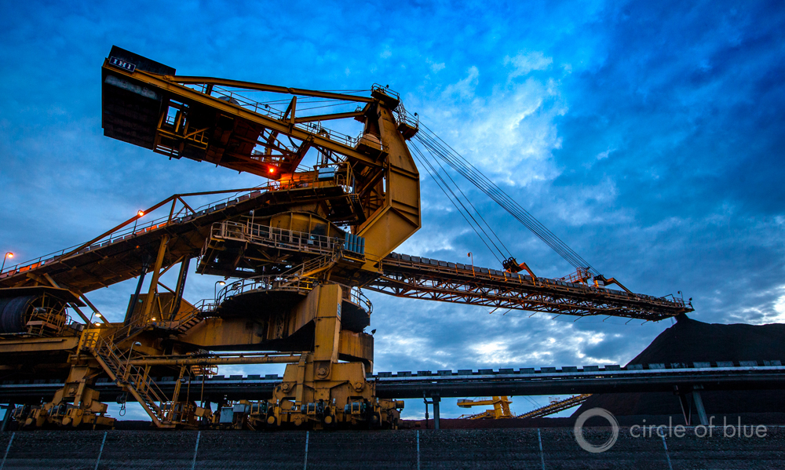
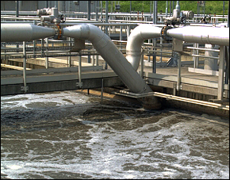

Water Diversions May Lead to Strike
KARNATAKA – The stand-off between the state and Tamil Nadu over the drinking water project at Hogenakkal, a region where River Cauvery enters Tamil Nadu, is the reason for the current bout of heated exchanges.
Tempers have been running high in Karnataka over Tamil Nadu’s Rs.1,334 crore project which would divert drinking water for the districts of Krishnagiri and Dharmapuri.
The Central Government had cleared the project in 1998 on an understanding between the two states that they would not object to utilising water from their own share.
Prior to this, Tamil Nadu had withdrawn its objection against Karnataka diverting Cauvery water for drinking water supply to Bangalore.
Read More here.
Source : Khaleej Times (UAE)
Posted On: 2008-04-07T00:00:00
Posted By: Circle of Blue


Content Date: 2008-04-07
Download Date: 2021-05-12
Document ID: L0C04BJDE